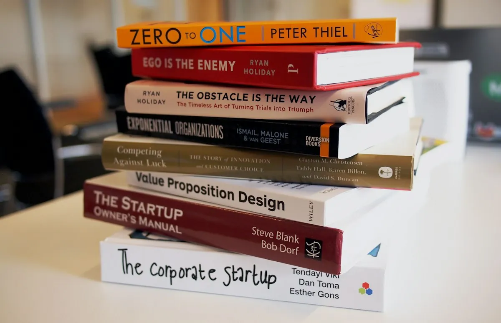

Patron Services & Facilities
Explore our complete ecosystem of physical lending, digital access, silent study sanctuaries, research consultations, and academic document delivery.
Core Patron Service Suite
Nine foundational circulation and information services open to all registered patrons.
1. Book Borrowing & Circulation
Check out up to 4 concurrent volumes for a standard 14-day loan term. Enjoy 1-click renewals from your online member dashboard and automated SMS/email reminders before due dates.
2. Book Returns & Drop Chute
Return volumes directly at the main circulation desk or utilize our 24/7 automated return drop chute located on Scholastic Row. Return receipts and catalog availability update instantaneously.
3. Book Reservations & Hold Queue
Never miss a popular or in-demand title. When all copies are out on loan, placing a reservation secures your position in line. Books are held at the desk for 48 hours upon arrival.
4. Membership Registration
Open to all scholars, university students, and community members. Gain instant access to physical borrowing, online catalog reservations, and digital reading room passes.
5. Digital Library Access & Dashboard
Manage your entire reading life from anywhere: track loan histories, check due dates, renew titles, receive due notices, and sync personal profile settings in real time.
6. Silent Reading Rooms & Carrels
Choose from 120 acoustically dampened oak study desks, naturally lit reading balconies, and reserved group colloquium suites equipped with high-speed scholarly Wi-Fi.
7. Reference & Research Consultations
Our reference librarians provide one-on-one appointments for academic literature reviews, citation verification (APA, Chicago, MLA), and archival access requests.
8. Cultural Events & Book Lectures
Monthly author colloquiums, evening philosophical reading circles, calligraphy masterclasses, and weekend early-reader workshops open to all community members.
9. Patron Support & Help Desk
Have questions regarding card renewals, lost volumes, fine appeals, or accessibility accommodations? Our help desk team is on standby via telephone, email, and live desk.
Physical Study Environments
Three specialized study zones tailored for solitary contemplation, intensive doctoral research, and microform review.
The Grand Rotunda Carrels
120 quarter-sawn oak desks beneath cathedral arched windows. Featuring individual brass reading lamps, high-speed fiber data ports, and absolute acoustic silence.
Doctoral Seminar Suites
Soundproof conference rooms accommodating 6 to 12 scholars. Equipped with 4K projection monitors, magnetic glass chalkboards, and collaborative seminar seating.

Microform & Preservation Lab
Equipped with overhead contactless planetary book scanners, microfilm reel readers, and conservation glove stations for inspecting fragile 18th-century folios.
Inter-Library Loan & Document Delivery
When our 45,000-volume physical collection does not contain the specialized monograph or archival dissertation you require, our global consortium network bridges the gap. We partner with over 45 academic libraries across North America and Europe to courier physical books and transmit high-fidelity digital scans directly to your account.
Circulation & Desk Operating Hours
Plan your visit around desk staffing and specialist availability across the academic calendar.
| Department / Facility | Monday – Thursday | Friday | Weekend (Sat – Sun) |
|---|---|---|---|
| Main Circulation Desk | 8:00 AM – 9:00 PM | 8:00 AM – 8:00 PM | 9:00 AM – 6:00 PM |
| Scholarly Reference Desk | 9:00 AM – 7:00 PM | 9:00 AM – 5:00 PM | 10:00 AM – 4:00 PM |
| Rare Manuscripts Reading Room | 10:00 AM – 5:00 PM | 10:00 AM – 4:00 PM | Closed (By Appointment) |
| Silent Carrels (Digital Keypass) | Open 24 Hours | Open 24 Hours | Open 24 Hours |
| 24/7 Automated Return Chute | Always Accessible | Always Accessible | Always Accessible |
Patron Code of Conduct & Acoustic Standards
To ensure scholarly focus and preserve historic collections, all patrons observe our three acoustic zones.
Zone 1: Absolute Silence
Grand Rotunda & Manuscript Room. No verbal communication, phone ringers muted, headphones at leak-proof decibels. Pure focus sanctuary.
Zone 2: Whispered Study
Mezzanine & General Stacks. Quiet academic inquiry, brief whispered queries, and solitary laptop work permitted with respect to neighbors.
Zone 3: Colloquium & Café
Atrium Café & Seminar Rooms. Conversational speech, group thesis debates, phone calls, and covered beverages warmly accommodated.